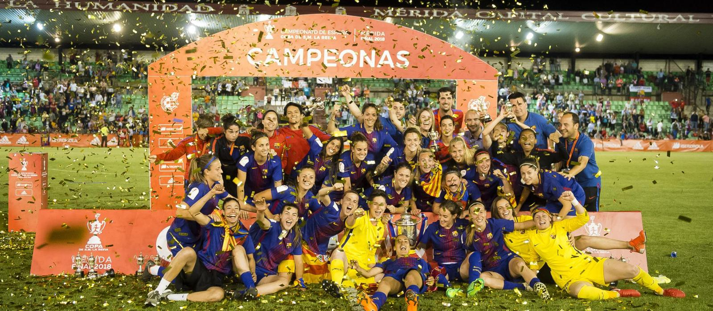
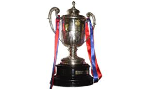

El palmarès del Barça Femení
L'equip femení del FC Barcelona, que ha passat per diferents èpoques, es va professionalitzar l'estiu del 2015
Lliga - 5

2011-12, 2012-13, 2013-14, 2014-15, 2019-20
Copa de la Reina - 6
1993-94, 2010-11, 2012-13, 2013-14 , 2016-17, 2017-18
Copa Catalunya - 10
2009, 2010, 2011, 2012, 2014, 2015, 2016, 2017, 2018, 2019
Supercopa d'Espanya - 1
2020
Copa de la Reina - 1

1985